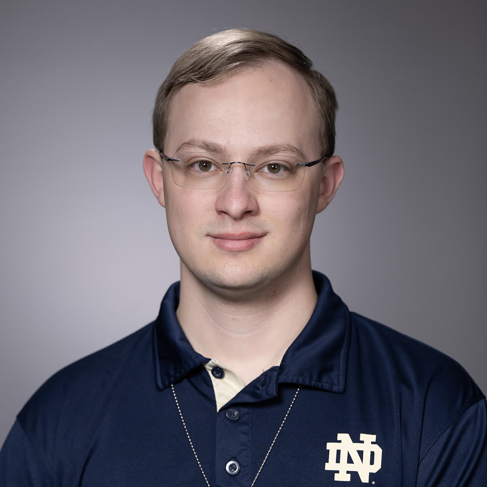

Jacob Bechtel
I'm a second-year PhD student in Computer Science and Engineering at the University of Notre Dame, co-advised by Dr. Matthew Morrison and Dr. Xiaobo Sharon Hu. I develop tools for content-addressable memory (CAM) design and adiabatic computing. I'm also interested in making electronic design automation (EDA) tools more accessible for education.
Research
I develop tools for evaluating CAM designs and exploring their design space, including EvaCAM. I also develop tools to automate the design of adiabatic chips. My work also includes making EDA education more accessible through Chipshub.
Teaching & Mentoring
I lead computing labs, mentor undergraduate teaching assistants, and help students build programming and problem-solving skills. My teaching experience also includes digital integrated circuits and signal processing.